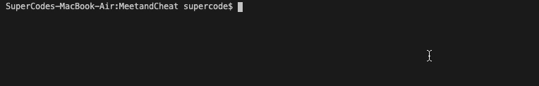
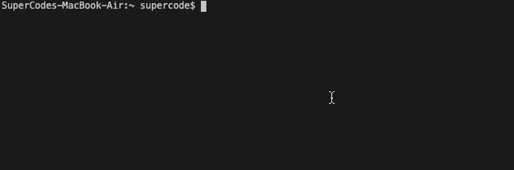
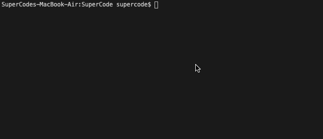
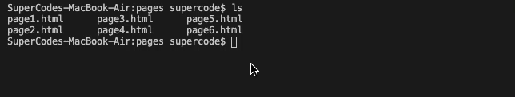
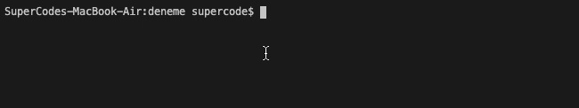
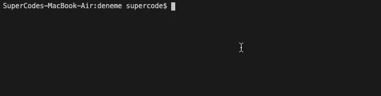
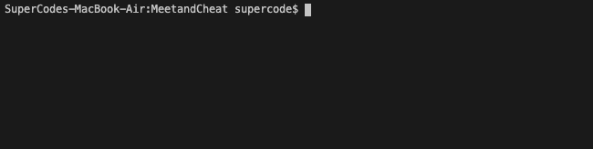

Using Git über VS Code
Visual Studio Code (VS Code) integriert Git standardmäßig und bietet einige seiner Funktionen direkt aus dem Editor heraus an.
Nach jeder Änderung kann der momentane Zustand des Projektes gespeichert werden. Es eignet sich für Projekte mit mehreren Autoren. Jeder Entwickler kann seine Ideen unabhängig in das Projekt einbauen. Sind diese soweit implementiert, kann alles wieder in das Projekt einfügt werden.
Hier mal die Basic-Commands, um eine Git-Projket in VS-Code zu bearbeiten:
| Command | Description | Gif |
|---|---|---|
| git init | Aus einem vorhandenen Verzeichnis mit Quellcode kann ein Git-Repository generiert werden, indem man das folgende Kommando in diesem Verzeichnis ausführt |
Command git init |
| git clone | Existierende, entfernte Repositories z.B. auf GitHub können auf den eigenen Rechner geklont werden. Damit kann man direkt loslegen und muss keine Remote-Server einrichten. |
Command git clone |
| git remote add name url | Damit Git den GitHub-Server kennt, muss er zunächst bekannt gemacht werden. Der GitHub-Server soll “origin” heißen (das ist so üblich) und wird mit diesem Kommando hinzugefügt. |
Command git remote add name url |
| git add datei | Verschiebt einzelne Dateien, die du geändert hast, in die Stage, um sie nachher commiten zu können. |
Command git add datei |
| git add . | Fügt alle geänderten Dateien zu Stage hinzu (nur solche Dateien werden dann im commit übernommen) |
Command gitt add
|
| git commit -m "nachricht" | Alle geänderten Dateien werden in das lokale Repository hinzugefügt mit Kommentar, was an den Dateien geändert wurde, um später gepusht zu werden. |
Command git commit -n "nachricht" |
| git push origin master | Pusht auf Master-Branch auf GitHub zum Origin-Repository, das dann von anderen wieder geklont oder gepullt werden kann. |
Command git push origin master |
| git pull | Um das lokale Repo mit dem Server zu synchonisieren, wird ein pull ausgeführt. Dies sollte auch vor jedem push gemacht werden. |
Command git pull |